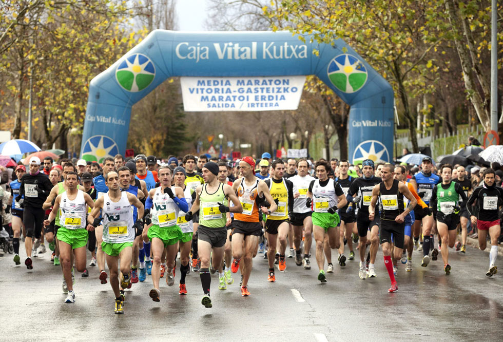
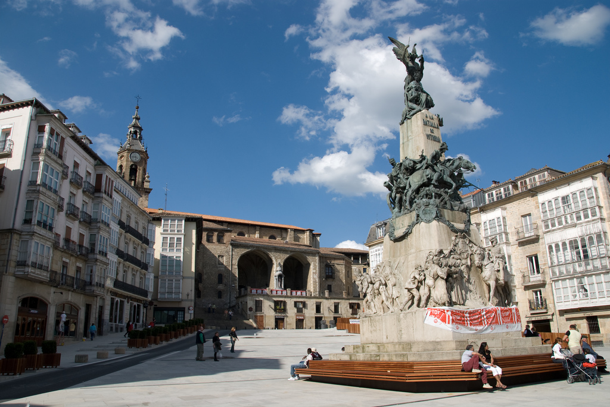

Motivación 100% Runnerland. Ayudando a las personas deportistas a mejorar!
Cuida tu salud disfrutando en compañía!
No importa lo que hagas siempre hay una carrera interesante en la que participar.

Prueba una media maratón y nada será lo mismo.
La preparación para una media maratón te llevará meses y cambiará tu vida para siempre. Tu forma física sufrirá una de las mayores revoluciones que hayas sentido.

Ciudad Runnerland
Prueba Vitoria y disfruta con sus carreras, su naturaleza y su gente. Vente y disfruta!
¿QUÉ OFERECE RUNNERLAND AL CORREDOR?
Dentro de Runnerland podrás encontrar: entrenamientos interesantes para probar, carreras con su información y una selección de zapatillas para practicar nuestro deporte favorito.
Clica en las secciones y descubre el contenido Runnerland.